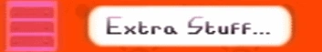
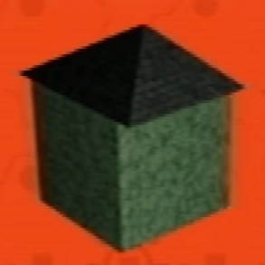

Extra Stuff
{kind=link}

{kind=link}
Extra Stuff is one of the sections in the secret menu. It shows a progression of sprite development and other concept images. Some of the content appears to be unused.
Guardian

{kind=link}
Development of the Guardian.
Here, the player character's name is revealed to be "Guardian" from the file name "01 guardian_history". Some of these older sprites are used in older gens and the school.
8 different designs are shown.
Amber

{kind=link}
Amber sprite development.
Amber's sprite history shows that she did not originally have a face or hat.
5 different designs are shown.
Toneth


{kind=link}
Toneth sprite development.
Toneth did not have a broken leg, nor did he have 'arms' in his earliest design. At one point he also had feathers. This was later replaced by a smoother design.
5 different designs are shown.
Pen


{kind=link}
Pen sprite development.
Pen's earlier concepts had legs of some sort (presumably to take up the whole space on the piano notes), which were later removed, then replaced with a tail or string. Her latest design also features a white ball, which may be referenced in the Sound Test menu.
6 different designs are shown.
Randice


{kind=link}
Randice sprite development.
Randice's design progression gained a stem and later leaves.
3 different designs are shown.
Wavey


{kind=link}
Wavey jumping out of the bucket.
Wavey is shown possibly as an earlier stage or concept where he was to jump around as a puddle of water. It is unsure if this is still in use.
Hudson


{kind=link}
Hudson sprite development
Hudson is shown with a design history, but presumably isn't used in game. The sprite development is unfinished. It was most likely an unused pet.
3 different designs are shown.
Gift Plane map


{kind=link}
A map of the Gift Plane, possibly mirrored, from the extra menu.
A concept map of the Gift Plane is showcased, with regions that may have been other homes.
The House
{kind=link}

{kind=link}
Unused House.
A concept or unused model of what may be the house is shown.
Idling here silences any current music and progressively moves the model closer.